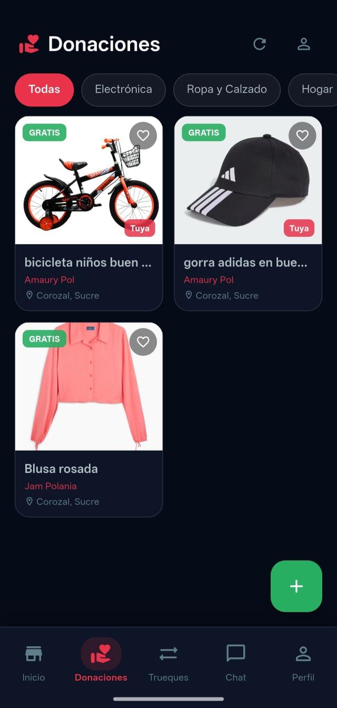

La sección de Donaciones es como el marketplace pero con un giro solidario: publicas artículos sin precio para regalarlos a quien más lo necesite. Tú eliges a quién se lo entregas.

Catálogo de artículos gratis disponibles en Corozal
¿Cómo publicar una donación? 📦
Ve a "Donaciones" 💝
Toca el ícono de corazón en la barra de navegación inferior.
Toca "+" para publicar
Agrega fotos del artículo que deseas donar. Buenas fotos = más solicitudes.
Describe el artículo
Escribe el nombre, estado (bueno, usado, etc.) y cualquier detalle relevante. No se pone precio — es una donación.
Publica y espera solicitudes 📬
Los usuarios interesados envían solicitudes explicando por qué lo necesitan.
Tú decides a quién 🫵
Revisa todas las solicitudes y elige a quién le entregas el artículo. El poder de decidir es tuyo.
Coordina la entrega por Chat 💬
Una vez elegido el beneficiario, usa el chat de la app para coordinar el punto y hora.
¿Cómo solicitar una donación? 🙋
Navega en "Donaciones"
Explora los artículos disponibles que otros usuarios han publicado para donar.
Toca "Solicitar donación"
Escribe un mensaje sincero explicando para qué lo necesitas. Esto ayuda al donante a elegir.
Espera la respuesta ⏳
Si el donante te elige, recibirás una notificación y podrán coordinar la entrega.